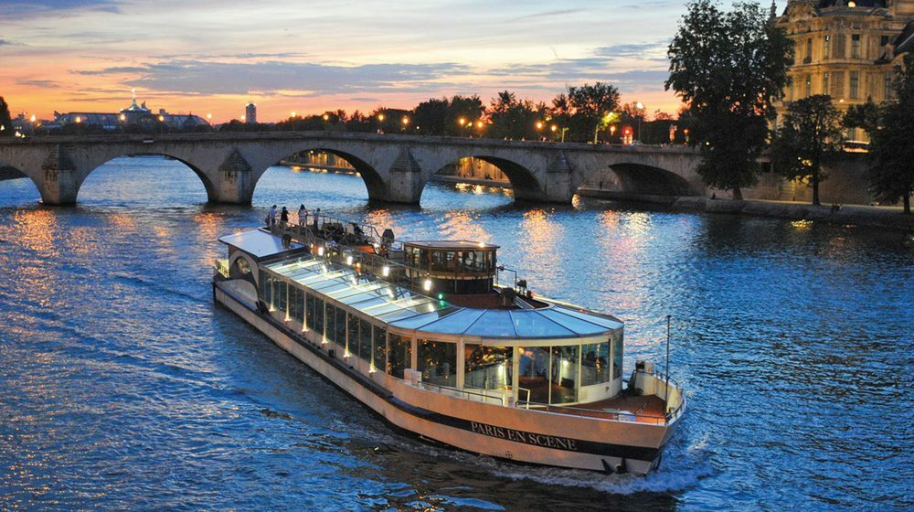

Arrival and First Impressions

The moment I landed at Charles de Gaulle Airport, I felt an overwhelming sense of excitement. The crisp Parisian air, the bustling streets, and the melodic sound of French conversations set the perfect tone for my adventure...
Exploring Iconic Landmarks
The Eiffel Tower

No trip to Paris is complete without visiting the Eiffel Tower. Standing beneath this architectural masterpiece was surreal...
Louvre Museum
Being an art enthusiast, the Louvre Museum was a dream come true. Seeing the Mona Lisa in person was an unforgettable experience...
Indulging in Parisian Cuisine
Paris is a paradise for food lovers, and I made sure to indulge in its culinary delights...
The Seine River Cruise
A Seine River cruise was the perfect way to wrap up my Parisian adventure...